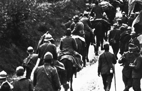

Lezione 18  La prima guerrra mondiale
La prima guerrra mondiale

Emilio Lussu è autore di una delle maggiori opere di letteratura italiana sulla Grande guerra: Un anno sull’altipiano. Fu interventista, sostenitore dell’entrata in guerra dell’Italia, e combatté come ufficiale di fanteria dal 1915 al 1918.
Nel brano racconta le sensazioni provate quando, dopo giorni e giorni passati in trincea e in attacchi contro gli austriaci, si ritrova nella condizione di poter osservare, non visto, i soldati nella trincea nemica.
«Addossati al cespuglio, il caporale ed io rimanemmo in agguato tutta la notte, senza riuscire a distinguere segni di vita nella trincea nemica. Ma l’alba ci compensò dell’attesa. Prima, fu un muoversi confuso di qualche ombra nei camminamenti, indi, in trincea, apparvero dei soldati con delle marmitte. Era certo la corvée del caffè. I soldati passavano, per uno o per due, senza curvarsi, sicuri com’erano di non esser visti, ché le trincee e i traversoni laterali li proteggevano dall’osservazione e dai tiri d’infilata della nostra linea. Mai avevo visto uno spettacolo eguale. Ora erano là, gli austriaci: vicini, quasi a contatto, tranquilli, come i passanti su un marciapiede in città. Ne provai una sensazione strana. Stringevo forte il braccio del caporale che avevo alla mia destra, per comunicargli, senza voler parlare, la mia meraviglia. Anch’egli era attento e sorpreso, e io ne sentivo il tremito che gli dava il respiro lungamente trattenuto. Una vita sconosciuta si mostrava improvvisamente ai nostri occhi. Quelle trincee, che pure noi avevamo attaccato tante volte inutilmente, così viva ne era stata la resistenza, avevano poi finito con l’apparirci inanimate, come cose lugubri, inabitate da viventi, rifugio di fantasmi misteriosi e terribili. Ora si mostravano a noi, nella loro vita. Il nemico, il nemico, gli austriaci, gli austriaci!... Ecco il nemico ed ecco gli austriaci. Uomini e soldati come noi, fatti come noi, in uniforme come noi, che ora si muovevano, parlavano, prendevano il caffè, proprio come stavano facendo, dietro di noi, in quell’ora stessa, i nostri stessi compagni. Strana cosa. Un’idea simile non mi era mai venuta alla mente. Ora prendevano il caffè. Curioso! E perché non avrebbero dovuto prendere il caffè? E, verso le 10 o le 11, avrebbero anche consumato il rancio, esattamente come noi. Forse che il nemico può vivere senza bere e senza mangiare? Certamente no. E allora, quale la ragione del mio stupore?»
(Emilio Lussu, Un anno sull’Altipiano, Einaudi, Torino, 1967)